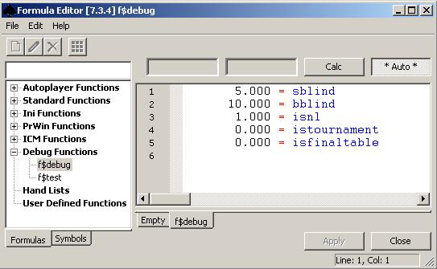
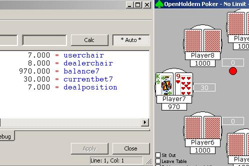
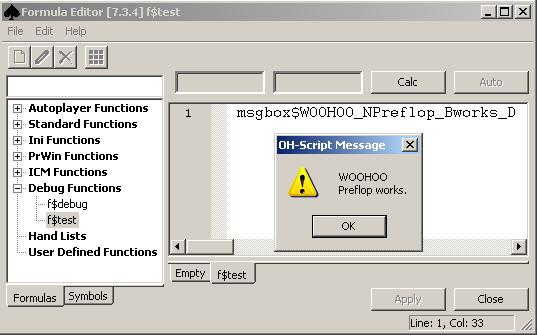

Built-in ↓Symbols
This section is largely based on the information originally written by Ray Bornert (http://www.winholdem.net/help/help-formula.html#symbols) and extended to include OpenHoldem-specific symbols.
These symbols take output from the scraper engine, from Table Map parameters, and from your formula functions to derive various bits of data that are useful when instructing the OpenHoldem Autoplayer how to act. The set of symbols got extended over time - not all of them are available for all versions of OpenHoldem. This list reflects the state of the latest version. Some old WinHoldem symbols got never implemented due to lack of documentation and practical relevance. Others got replaced or removed over time. Please refer to the chapter “Outdated Features and Incompatibilities between OpenHoldem and WinHoldem” for more information.
???
General
| Symbol | Meaning |
| session | the current logging instance (0-24) |
| version | returns the version number of OpenHoldem that is currently running |
Table Map
| Symbol | Meaning |
| isfinaltable | true, if you are sitting at the final table of a multi-table tournament. Needs to be supported by the table-map. |
| nchairs | the integer value for the Table Map symbol s$nchairs |
| network$def | true if user defined string “def” appears within the Table Map symbol s$network; case-sensitive; lower-cases are expected |
| sitename$abc | true if user defined string “abc” appears within the Table Map symbol s$sitename; case-sensitive; lower-cases are expected |
Limits
| Symbol | Meaning |
| bblind | the big blind amount |
| sblind | the small blind amount |
| ante | the current pre-deal ante requirement |
| buyin | the tournament buyin in dollars |
| lim | the current table limit 0=NL 1=PL 2=FL |
| isnl | (lim == 0) |
| ispl | (lim == 1) |
| isfl | (lim == 2) |
| istournament | true if a tournament table is detected. This feature works automatically, based on title-strings of the poker-table, blind-levels, sum of chips at the table, etc. |
| isfinaltable | true if you play the final table of a MTT, depending on the tablemap region r$c0isfinaltable |

Hand Rank
Handrank rates your hand-value, assuming you go preflop allin against N opponents, who hold random cards (N = f$prwin_number_of_opponents). A low handrank means. your hand is good, a high handrank means, that many holdings are a favourit against you. For more info see the chapter about handrank.
| Symbol | Meaning |
| handrank169 | your pocket holdem hand rank 1-169 |
| handrank2652 | your pocket holdem hand rank 12-2652 |
| handrank1326 | your pocket holdem hand rank 6-1326 (handrank2652/2) |
| handrank1000 | your pocket holdem hand rank 4-1000 (1000*handrank2652/2652) |
| handrankp | 2652 / (1+f$prwin_number_of_opponents) ??? |
Chairs
Please note OpenHoldem needs to see player-cards in a non-showdown-situation to recognize the userchair and then will lock the chair for stability reasons until the session of the hand. A change in userchair can happen on table-change in MTTs at some casinos and will be handled automatically.
| Symbol | Meaning |
| userchair | user chair number (0-9), 0 is usually top right |
| dealerchair | dealer chair number (0-9) |
| raischair | raising chair number (0-9) |
| smallblind_chair | the chair of the small-blind (0-9) |
| bigblind_chair | the chair of the big-blind (0-9) |
| cutoff_chair | the chair of the cut-off (0-9) |
| firstcaller_chair | the chair of the first caller (0-9), current orbit only |
| lastcaller_chair | the chair of the last caller (0-9), current orbit only |
| firstraiser_chair | the chair of the first raiser (0-9), current orbit only |
| opponent_chair_headsup | the chair of your single opponent (0-9) if the game is or became headsup |
| chair$abc | player “abc” chair number (0-9); -1 if not found |
| chairbit$abc | player “abc” chairbit (1 << chair$abc); 0 if not found |
Positions
To avoid problems with fast folds in early position the dealposition-symbols will consider the following players as dealt
- any players who are betting, especially the blinds
- all active players between the blinds and the first user who holds cards, i.e. players who are seated and not sitting out. If one of these players does not hold cards, then OpenHoldem will assume that it is due to very fast folds in early positions.
- the user, if he is seated and holds cards
- any players with cardbacks, especially all players between the user and the dealer.
| Symbol | Meaning |
| betround | betting round (1-4) 1=preflop, 2=flop, 3=turn, 4=river |
| betposition | your bet position (1=sblind,2=bblind,...,nplayersdealt=dealer); betposition will change as players fold in front of you. |
| dealposition | your deal position (1=sblind,2=bblind ... nplayersdealt=dealer); dealposition will not change as players fold |
| originaldealposition | a memory of deal position which retains its value through the hand, even if the user folds |
| callposition | your numbered offset from the raising player (who is 0) |
| dealpositionrais | the deal position of the raising player (1-10) |
| betpositionrais | the bet position of the raising player (1-10) |

Probabilities
There are several variations of PrWin (standard, weighted and enhanced), each with several pros and cons. For more info see the chapter about PrWin.
| Symbol | Meaning |
| prwin |
the probability of winning this hand (0.000 - 1.000) .
PrWin might assume:
|
| prlos | the probability of losing this hand (0.000 - 1.000) , assuming random ranges of your opponents |
| prtie | the probability of pushing this hand (0.000 - 1.000) , assuming random ranges of your opponents |
| prwinnow | probability that all opponents have a lower hand right now, assuming random ranges of your opponents |
| prlosnow | probability that any opponents have a higher hand right now random, assuming random ranges of your opponents |
| random | number between (0.000-1.000). Value is recalculated each time symbol appears in formula. |
| randomheartbeat |
random number between (0.000-1.000) for the curren heartbeat. Value is calculated only once in current heartbeat.
Introduced for OpenHoldem 2.1.9
|
| randomround | random number between (0.000-1.000) for the current round. Value is calculated only once in current round. |
| randomhand | random number between (0.000-1.000) for the hand. Value is calculated only once per hand. |
Formulas
| Symbol | Meaning |
|
f$name
|
reference the specified standard or user defined function |
Chip Amounts
| Symbol | Meaning |
| balance | your balance |
| balanceatstartofsession | your first known balance after OpenHoldem connects to a table |
| balance0..balance9 | specific player/chair balance |
| stack0..stack9 | sorted playersplaying balances from 0=biggest to 9=smallest |
| balance_rankx (x=0-9) | ranked list of player balances similar to stack0..stack9, but includes players not currently in hand and includes currentbet for each player as well. rank0 has highest balance, rank9 smallest |
| currentbet | your current amount of chips in play |
| currentbet0..currentbet9 | specific player/chair currentbet call the amount you need to call |
| bet | the amount of a single initial bet or raise for current round |
| bet1..bet4 | the amount of a single initial bet or raise for round 1 - round 4 |
| pot | the total amount of chips in play including player bets |
| potcommon | the total amount of chips in the middle |
| potplayer | the total amount of chips in front of all players |
Number of Bets
Please note that in a fixed-limit game (default) the bets double up at the turn. This will affect the symbols below. If you play no-limit or pot-limit please make sure that your tablemap detects the game-type correctly.
| Symbol | Meaning |
| nbetstocall | total number of additional bets required to call. |
| nbetstorais | total number of additional bets required to min raise.(Fixed Limit) |
| ncurrentbets | total number of bets currently in front of you. |
| ncallbets | total number of bets you would have on the table if you call |
| nraisbets | total number of bets you would have on the table if you min-raise (Fixed Limit) |
List Tests
| Symbol | Meaning |
| islistXYZ |
true if your hand is in named list XYZ
Please note that OpenHoldem 5.x+ supports arbitrary many lists with user-defined names as long as the name starts with “list”. OpenHoldem is no longer restricted to list0..list999.
|
Poker Values
| Symbol | Meaning |
| pokerval | absolute poker value for your 5 card hand |
| pokervalplayer | absolute poker value for your 2 card pocket hand only |
| pokervalcommon | absolute poker value for the common cards |
| pcbits |
bit list of where your pocket cards are used in your 5 card hand.
If a certain hand can be made with either one of your cards or with one of the board cards OpenHoldem will first take your card. This can happen only for straights and for kickers for quads. This behaviour may seem counter-intuitive to some people, but got inherited from WinHoldem and kept for backward-compatibility.
|
| npcbits |
number (0-2) of your pocket cards used in your 5 card hand.
As npcbits symbol depends on pcbits, the same word of caution applies to this symbol, too.
|
Poker Value Constants
| Symbol | Meaning |
| hicard | 1<< 0 (2 ** 0) |
| onepair | 1<<24 (2 ** 24) |
| twopair | 1<<25 (2 ** 25) |
| threeofakind | 1<<26 (2 ** 26) |
| straight | 1<<27 (2 ** 27) |
| flush | 1<<28 (2 ** 28) |
| fullhouse | 1<<29 (2 ** 29) |
| fourofakind | 1<<30 (2 ** 30) |
| straightflush | 1<<31 (2 ** 31) |
| royalflush | 0x800edcba |
Hand Tests
| Symbol | Meaning |
| $CCc | references a hand symbol - see the {Hand Symbols} section below for details |
| $$AB# | references a card symbol - see the {Card Symbols} section below for details |
| ishandup | true if your hand has gone up a level (i.e. from 1 pair to 2 pair) |
| ishandupcommon | true if common hand has gone up a level (i.e. from 1 pair to 2 pair) |
| ishicard | true when you have hicard hand |
| isonepair | true when you have one pair |
| istwopair | true when you have two pair |
| isthreeofakind | true when you have three of a kind |
| isstraight | true when you have a straight |
| isflush | true when you have a flush |
| isfullhouse | true when you have a full house |
| isfourofakind | true when you have four of a kind |
| isstraightflush | true when you have a straight flush |
| isroyalflush | true when you have a royal flush |
Hand and Board-Expressions
!!!???
Pocket Tests
| Symbol | Meaning |
| ispair | true when your two dealt pocket cards are rank equal (0-1) |
| issuited | true when your two dealt pocket cards are suit equal (0-1) |
| isconnector | true when your two dealt pocket cards are rank adjacent (0-1) |
Pocket / Common Tests
| Symbol | Meaning |
| ishipair | true when you have hi pair (0-1) |
| islopair | true when you have lo pair (0-1) |
| ismidpair | true when you have mid pair (0-1) |
| ishistraight | true when you have the highest straight possible |
| ishiflush | true when you have the highest flush possible |
Players, Opponents
Note that “raising players” does no longer count the so-called “blind-raisers” (former WinHoldem definition).
| Symbol | Meaning |
| nplayersseated | number of players seated (including you) (0-10) |
| nplayersactive | number of players active (including you) (0-10) |
| nplayersdealt | number of players dealt (including you) (0-10) |
| nplayersplaying | number of players playing (including you) (0-10) |
| nplayersblind | number of players blind (including you) (0-10) |
| nfriendsseated | 1 if you are seated, 0 otherwise (0-1) |
| nopponentsseated | number of opponents seated (not including you) (0-9) |
| nopponentsactive | number of opponents active (not including you) (0-9) |
| nopponentsdealt | number of opponents dealt (not including you) (0-9) |
| nopponentsplaying | number of opponents playing (not including you) (0-9) |
| nopponentsblind | number of opponents blind (not including you) (0-9) |
| nopponentschecking | number of opponents playing with a zero current bet equal to the previous bettor (0-9) |
| nopponentscalling | number of opponents playing with a non-zero current bet equal to the previous bettor (0-9) |
| nopponentstruelyraising | number of opponents playing with a current bet greater than the previous bettor (0-9). This symbol counts only people who are truely raising, e,g, more than a big-blind preflop. It does not count people posting antes or blinds like the former WinHoldem symbol “nopponentsraising”, Also counts the first better postflop. |
| nopponentsbetting | number of opponents playing with a non zero current bet (0-9) |
| nopponentsfolded | number of opponents that have folded this hand (0-9) |
| nplayerscallshort | number of players that must call to stay in the hand |
| nchairsdealtleft | number of chairs dealt after your chair, up to and including the dealer, but not the blinds. |
| nchairsdealtright | number of chairs dealt before your chair, including the blinds |
| playersseatedbits | bits 9-0: 1=seated 0=unseated |
| playersactivebits | bits 9-0: 1=active 0=inactive |
| playersdealtbits | bits 9-0: 1=dealt 0=notdealt |
| playersplayingbits | bits 9-0: 1=playing 0=notplaying |
| playersblindbits | bits 9-0: 1=blind 0=notblind |
| opponentsseatedbits | bits 9-0: 1=seated 0=unseated |
| opponentsactivebits | bits 9-0: 1=active 0=inactive |
| opponentsdealtbits | bits 9-0: 1=dealt 0=notdealt |
| opponentsplayingbits | bits 9-0: 1=playing 0=notplaying |
| opponentsblindbits | bits 9-0: 1=blind 0=notblind |
Flags
| Symbol | Meaning |
| fmax | highest numbered flag button pressed |
| f0..f19 | true if flag 0 - flag 19 button is pressed, false otherwise |
| flagbits | flag button bits 19-0 - 1=pressed 0=notpressed |

The flags toolbar is used to set internal OpenHoldem flag symbols f0..f19 to on or off. These flags can be used in your formula set to quickly enanble or disable certain functionality. E.g. you could use flag 0 to to tell your bot to use a different starting-hands-chart or to do more conti-betting.
##f$preflop## WHEN f0 RETURN f$PokerTragedySHCAction FORCE WHEN Others RETURN f$SklanskySHCAction FORCE
Common Cards
| Symbol | Meaning |
| ncommoncardsknown | number of common cards known (normal not highlighted) |
(Un)known Cards
| Symbol | Meaning |
| ncardsknown | total number of cards you can see (yours and commons) |
| ncardsunknown | total number of cards you cannot see (deck and opponents) |
| ncardsbetter | total number of single unknown cards that can beat you, e.g. if the board is four suited in hearts, and you have two spades, then ncardsbetter will be at least 9, because of the possible flush |
| \strikeout off\uuline off\uwave offnouts | \strikeout off\uuline off\uwave offthe total number of unseen single cards that if dealt to the board might put your hand in the lead. to be counted as an out, the card must be able to bump your level and your new level must be higher than the resulting common level. |
Ray E. Bornerts definition of an out is way too optimistic and nearly unusable (a hand like 72o at a board of AKQ will give you 6 outs, as every 7 and every 2 will bump your handlevel to a pair, which beats high-card ace at the board). To calculate outs in a meaningful way, there is f$mh_nouts in Winngys and HTCs hand-strength-library and there are also some good outs-counters available in the forum. However we had to keep this symbol in the code-base, as some outs-counters are based on nouts and try to discount it in a meanigful way.
nhands
| Symbol | Meaning |
| nhands | total possible number of two-card hands using the unseen cards (nhandshi+nhandslo+nhandsti) |
| nhandshi | number of hands that can beat you in a showdown right now |
| nhandslo | number of hands that you can beat in a showdown right now |
| nhandsti | number of hands that can tie you in a showdown right now |
Flushes / Straights / Sets
| Symbol | Meaning |
| nsuited | total number of same suited cards you have (1-7) |
| nsuitedcommon | total number of same suited cards in the middle (1-5) |
| tsuit | specific card suit for nsuited (1-4) |
| tsuitcommon | specific card suit for nsuitedcommon (1-4) |
| nranked | total number of same ranked cards you have (1-4) |
| nrankedcommon | total number of same ranked cards in the middle (1-4) |
| trank | specific card rank for nranked (2-14) |
| trankcommon | specific card rank for nrankedcommon (2-14) |
| nstraight | total number of connected cards you have (1-7) |
| nstraightcommon | total number of connected common cards (1-5) |
| nstraightfill | total number of cards needed to fill a straight (0-5) |
| nstraightfillcommon | total number of cards needed to fill a common straight (0-5) |
| nstraightflush | total number of suited connected cards you have (1-7) |
| nstraightflushcommon | total number of suited connected common cards (1-5) |
| nstraightflushfill | total number of cards needed to fill a straightflush (0-5) |
| nstraightflushfillcommon | total number of cards needed to fill a common straightflush (0-5) |
Rank Bits
Please note: aces are both hi and lo.
| Symbol | Meaning |
| rankbits | bit list of card ranks (yours and commons) |
| rankbitscommon | bit list of card ranks (commons) |
| rankbitsplayer | bit list of card ranks (yours) |
| rankbitspoker | bit list of card ranks (pokerval) |
| srankbits | bit list of suited card ranks (yours and commons tsuit) |
| srankbitscommon | bit list of suited card ranks (commons tsuitcommon) |
| srankbitsplayer | bit list of suited card ranks (yours tsuit) |
| srankbitspoker | bit list of suited card ranks (pokerval tsuit) |
Rank Hi
Aces are hi.
| Symbol | Meaning |
| rankhi | highest card rank (14-2) (yours and commons) |
| rankhicommon | highest card rank (14-2) (commons) |
| rankhiplayer | highest card rank (14-2) (yours) |
| rankhipoker | highest card rank (14-2) (pokerval) |
| srankhi | highest suited card rank (14-2) (yours and commons tsuit) |
| srankhicommon | highest suited card rank (14-2) (commons tsuitcommon) |
| srankhiplayer | highest suited card rank (14-2) (yours tsuit) |
| srankhipoker | highest suited card rank (14-2) (pokerval tsuit) |
Rank Lo
Aces are hi.
| Symbol | Meaning |
| ranklo | lowest card rank (14-2) (yours and commons) |
| ranklocommon | lowest card rank (14-2) (commons) |
| rankloplayer | lowest card rank (14-2) (yours) |
| ranklopoker | lowest card rank (14-2) (pokerval) |
| sranklo | lowest suited card rank (14-2) (yours and commons tsuit) |
| sranklocommon | lowest suited card rank (14-2) (commons tsuitcommon) |
| srankloplayer | lowest suited card rank (14-2) (yours tsuit) |
| sranklopoker | lowest suited card rank (14-2) (pokerval tsuit) |
Time
| Symbol | Meaning |
| elapsed | time in seconds since sitting down |
| elapsedhand | time in seconds since end of previous hand |
| elapsedauto | time in seconds since autoplayer took action |
| elapsedtoday | time in seconds since midnight GMT |
Autoplayer
| Symbol | Meaning |
| ismyturn | (myturnbits & 7) (rais or call/chec or fold) |
| myturnbits |
a bit-vector that tells you what buttons are visible
bits 43210 correspond to buttons KARCF (check alli rais call fold). Bit 4 (check) was added in OpenHoldem 2.0, that’s why it is “out of order”
|
| issittingin | true when you are not being dealt out |
| issittingout | true when you are being dealt out |
| isautopost | true when you are autoposting |
| isfinalanswer | true when autoplayer preparing to act; false any other time. |
History (I)
The action-symbols (didrais, didcall, etc.) mean: what the autoplayer did, not what the user did or what happened in the hand. That does regularly confuse new users and causes problem when simulating hands at ManualMode or with Replay Frames.
| Symbol | Meaning |
| nplayersround1..nplayersround4 | number of players that began betting round 1 - round 4 |
| nplayersround | number of players that began the current betting round |
| prevaction | record of previously attempted autoplayer action. (-1=fold 0=chec 1=call 2=rais 3=swag 4=alli) |
| didchec | the number of times the autoplayer has checked during the current round |
| didcall | the number of times the autoplayer has called during the current round |
| didrais | the number of times the autoplayer has raised during the current round |
| didswag | the number of times the autoplayer has swag’d during the current round |
| nbetsround1..nbetsround4 | the largest number of bets in front of any player during round 1- round 4 |
| nbetsround | the largest number of bets in front of any player right now |
| didchecround1..didchecround4 | true if userchair checked during round 1 - round 4 |
| didcallround1..didcallround4 | true if userchair called during round 1 - round 4 |
| didraisround1..didraisround4 | true if userchair raised during round 1 - round 4 |
| didswaground1..idswaground4 | true if userchair swag’d during round 1 - round 4 |
Versus
| Symbol | Meaning |
| vs$nhands | Total possible number of opponent hands |
| vs$nhandshi | Number of opponent hands that have higher river chances |
| vs$nhandsti | Number of opponent hands that have equal river chances |
| vs$nhandslo | Number of opponent hands that have lower river chances |
| vs$nhandshinow | Number of opponent hands that beat heros hand currently |
| vs$nhandstinow | Number of opponent hands that tia gainst hero currently |
| vs$nhandslonow | Number of opponent hands that heros hand beats currently |
| vs$prwin | Probability (0.000 - 1.000) of winning versus all possible opponent hands |
| vs$prtie | Probability (0.000 - 1.000) of chopping versus all possible opponent hands |
| vs$prlos | Probability (0.000 - 1.000) of losing versus all possible opponent hands |
| vs$prwinhi | Probability (0.000 - 1.000) of winning versus higher opponent hands |
| vs$prtiehi | Probability (0.000 - 1.000) of chopping versus higher opponent hands |
| vs$prloshi | Probability (0.000 - 1.000) of losing versus higher opponent hands |
| vs$prwinti | Probability (0.000 - 1.000) of winning versus equal opponent hands |
| vs$prtieti | Probability (0.000 - 1.000) of chopping versus equal opponent hands |
| vs$prlosti | Probability (0.000 - 1.000) of losing versus equal opponent hands |
| vs$prwinlo | Probability (0.000 - 1.000) of winning versus lower opponent hands |
| vs$prtielo | Probability (0.000 - 1.000) of chopping versus lower opponent hands |
| vs$prloslo | Probability (0.000 - 1.000) of losing versus lower opponent hands |
| vs$ListX$prwin | Probability (0.000 - 1.000) of winnning versus hand list X |
| vs$listX$prlos | Probability (0.000 - 1.000) of losing versus hand list X |
| vs$listX$prtie | Probability (0.000 - 1.000) of a tie versus hand list X |
| vs$prwinhinow | Probability (0.000 - 1.000) of winning versus currently better opponent hands |
| vs$prtiehinow | Probability (0.000 - 1.000) of chopping versus currently better opponent hands |
| vs$prloshinow | Probability (0.000 - 1.000) of losing versus currently better opponent hands |
| vs$prwintinow | Probability (0.000 - 1.000) of winning versus currently equal opponent hands |
| vs$prtietinow | Probability (0.000 - 1.000) of chopping versus currently equal opponent hands |
| vs$prlostinow | Probability (0.000 - 1.000) of losing versus currently equal opponent hands |
| vs$prwinlonow; | Probability (0.000 - 1.000) of winning versus currently lower opponent hands |
| vs$prtielonow | Probability (0.000 - 1.000) of chopping versus currently lower opponent hands |
| vs$prloslonow | Probability (0.000 - 1.000) of losing versus currently lower opponent hands |
History (II)
hi_<sym>x (x=1-4) the value of the symbol <sym> as of your last turn in betting round x. Example: hi_prwin1 would return prwin as of your last turn in br1.
Valid values for <sym> are:
| PROBABILITIES | prwin, prlos, prtie |
| CHIP AMOUNTS |
balance..balance9
stack0..stack9 |
| POKER VALUES | pokerval, pokervalplayer, pokervalcommon, pcbits, npcbits |
| HAND TESTS | ishandup, ishandupcommon, ishicard, isonepair, istwopair, isthreeofakind, isstraight, isflush, isfullhouse, isfourofakind, isstraightflush, isroyalflush, isfiveofakind |
| POCKET/COMMON TESTS | ishipair, islopair, ismidpair, ishistraight, ishiflush |
| (UN)KNOWN CARDS | nouts, ncardsbetter |
| NHANDS | nhands, nhandshi, nhandslo, nhandsti, prwinnow, prlosnow |
| FLUSHES SETS STRAIGHTS | nsuited, nsuitedcommon, tsuit, tsuitcommon, nranked, nrankedcommon, trank, trankcommon, nstraight, nstraightcommon, nstraightfill, nstraightfillcommon, nstraightflush, nstraightflushcommon, nstraightflushfill, nstraightflushfillcommon |
| RANK BITS | rankbits, rankbitscommon, rankbitsplayer, rankbitspoker, srankbits, srankbitscommon, srankbitsplayer, srankbitspoker |
| RANK HI | rankhi, rankhicommon, rankhiplayer, rankhipoker, srankhi, srankhicommon, srankhiplayer, srankhipoker |
| RANK LO | ranklo, ranklocommon, rankloplayer, ranklopoker, sranklo, sranklocommon, srankloplayer, sranklopoker |
Table statistics
Table statistics for the last 15 minutes.
| Symbol | Meaning |
| floppct | percentage of players seeing the flop for the last y minutes |
| turnpct | percentage of players seeing the turn for the last y minutes |
| riverpct | percentage of players seeing the river for the last y minutes |
| avgbetspf | average number of bets preflop for the last y minutes |
| tablepfr | pfr percentage preflop for the last y minutes |
| maxbalance | my highest balance during the session handsplayed number of hands played this session |
| balance_rankx (x=0-9) | ranked list of player balances (includes players not currently in hand, and includes currentbet for each player as well). rank0 has highest balance. |
Betting Action
| Symbol | Meaning |
| lastraisedx (x=1-4) | which chair was the last to raise in round x |
| raisbitsx (x=1-4) | which chairs raised in round x |
| callbitsx (x=1-4) | which chairs called in round x |
| foldbitsx (x=1-4) | which chairs folded in round x |
| ac_agchair_after | does the aggressor chair act after me? |
| ac_preflop_pos | preflop position of the userchair (SB=1 BB=2 Early=3 Middle=4 Late=5 Dealer=6) |
| ac_prefloprais_pos | preflop position of the raiser (SB=1 BB=2 Early=3 Middle=4 Late=5 Dealer=6) |
| ac_postflop_pos | postflop position of the userchair (first=1 early=2 middle=3 late=4 last=5) |
| ac_first_into_pot | returns true if you are first into the pot (first to act or checked to you) |
| ac_betposx (x=0-9) | returns bet position of specified chair |
| ac_dealposx (x=0-9) | returns deal position of specified chair |
Logging
| Symbol | Meaning |
| log$YourTextGoesHere | log$YourTextGoesHere When executed, adds your specified text to the log. |
For example if you have the following f$rais-formula,
##f$rais## [ betround == 2 && (nsuited == 3 || nstraight == 3) && log$ItLives ]
and you flop a backdoor flush draw, then OpenHoldem will raise and also add the text "ItLives" to the log file, just before the RAIS line. Everytime a log$ symbol is accessed it will be flagged for logging. You can use this to track which part of your formula is to blame for the action taken by OpenHoldem.
Note: You want to use the log$ symbol at the end of a logic block, to make sure it only gets flagged when all the previous statements are true.
Note: You have to turn on Log Symbols in the preferences. You can also dictate the maximum number of log symbols that will be logged per action. When enabled, up to 4 log symbols will be displayed in OpenHoldem’s main window.
MessageBoxes with Info
In addition to logging it might be useful to notify the user at run-time and pause script-execution, mainly in a debugging session. For this usecase OpenHoldem provides a symbol msgbox$TEXT, that — surprise — will show a messagebox with text. As the character-set in symbols is slightly limited the following replacements will take place.
- _B will be replaced by a blank
- _C will be replaced by a comma
- _D will be replaced by a dot
- _N will be replaced by a new-line
- _U will be replaced by a underscore
The symbol msgbox$TEXT will evaluate to 0. An example:
##f$preflop## WHEN Others RETURN (Call + msgbox$WOOHOO_NPreflop_Bworks_D) FORCE

ICM calculator
An overview of basic ICM push/fold decisions and how they work with OpenHoldem can be found here: http://www.maxinmontreal.com/wiki/index.php5?title=ICM.
UTG in a symbols name does always mean the first player after BB at a full-ring table with 10 players. If less players do actually sit at the table, the first position (UTG) will be ignored and the first player will be named UTG+1 (or UTG+2, etc.).
The ICM symbols will always assume, that you win against the player with the smallest stack or lose against the player with the biggest stack of the remaining non-folded players (or against N players with the N smallest stacks), so the ICM-symbols will be slightly too pessimistic in multiway-situations. For headsup (including blind-battle) and against concrete players (e.g. icm_alliwinUTG ) the symbols are accurate.
| Symbol | Description |
| icm | my tournament equity before any action is considered (just balances) |
| icm_fold | my tournament equity if I fold |
| icm_callwin | my tournament equity if I call and win |
| icm_calllose | my tournament equity if I call and lose |
| icm_calltie | my tournament equity if I call and tie |
| icm_alliwin0..icm_alliwin9 | my tournament equity if I push all-in and win against 0 - 9 callers |
| icm_allilose0..icm_allilose9 | my tournament equity if I push all-in and lose against 0 - 9 callers |
| icm_alliwinSB | my tournament equity if I push all-in and win against the small blind |
| icm_alliwinBB | my tournament equity if I push all-in and win against the big blind |
| icm_alliwinUTG | my tournament equity if I push all-in and win against UTG |
| icm_alliwinUTG1 | my tournament equity if I push all-in and win against UTG + 1 |
| icm_alliwinUTG2 | my tournament equity if I push all-in and win against UTG + 2 |
| icm_alliwinUTG3 | my tournament equity if I push all-in and win against UTG + 3 |
| icm_alliwinUTG4 | my tournament equity if I push all-in and win against UTG + 4 |
| icm_alliwinUTG5 | my tournament equity if I push all-in and win against UTG + 5 |
| icm_alliwinUTG6 | my tournament equity if I push all-in and win against UTG + 6 (cut-off) |
| icm_alliwinCO | my tournament equity if I push all-in and win against the cut-off |
| icm_alliwinD | my tournament equity if I push all-in and win against the dealer |
| icm_allitieSB | my tournament equity if I push all-in and tie against the small blind |
| icm_allitieBB | my tournament equity if I push all-in and tie against the big blind |
| icm_allitieUTG | my tournament equity if I push all-in and tie against UTG |
| icm_allitieUTG1 | my tournament equity if I push all-in and tie against UTG + 1 |
| icm_allitieUTG2 | my tournament equity if I push all-in and tie against UTG + 2 |
| icm_allitieUTG3 | my tournament equity if I push all-in and tie against UTG + 3 |
| icm_allitieUTG4 | my tournament equity if I push all-in and tie against UTG + 4 |
| icm_allitieUTG5 | my tournament equity if I push all-in and tie against UTG + 5 |
| icm_allitieUTG6 | my tournament equity if I push all-in and tie against UTG + 6 (cut-off) |
| icm_allitieCO | my tournament equity if I push all-in and tie against the cut-off |
| icm_allitieD | my tournament equity if I push all-in and win against the dealer |
| icm_alliloseSB | my tournament equity if I push all-in and lose against the small blind |
| icm_alliloseBB | my tournament equity if I push all-in and lose against the big blind |
| icm_alliloseUTG | my tournament equity if I push all-in and lose against UTG |
| icm_alliloseUTG1 | my tournament equity if I push all-in and lose against UTG + 1 |
| icm_alliloseUTG2 | my tournament equity if I push all-in and lose against UTG + 2 |
| icm_alliloseUTG3 | my tournament equity if I push all-in and lose against UTG + 3 |
| icm_alliloseUTG4 | my tournament equity if I push all-in and lose against UTG + 4 |
| icm_alliloseUTG5 | my tournament equity if I push all-in and lose against UTG + 5 |
| icm_alliloseUTG6 | my tournament equity if I push all-in and lose against UTG + 6 (cut-off) |
| icm_alliloseCO | my tournament equity if I push all-in and lose against the cut-off |
| icm_alliloseD | my tournament equity if I push all-in and lose against the dealer |
Hand multiplexor
The purpose of the hand multiplexor is to transfer control to a specific named formula based on your actual 2 card hand. Note that the X’s and x’s are not case sensitive.
| Symbol | Meaning |
| f$$X | Evaluate the UDF that corresponds to my first card |
| f$$XX | Evaluate the UDF that corresponds to my first card and second card |
| f$$XXx | Evaluate the UDF that corresponds to my first card, second card and suited/unsuited state |
The X’s in the three symbols will be substituted with your actual hand values at time of evaluation. The first "X" will contain the the rank of your highest hole card, the second "X" will contain the rank of your lowest hole card, and the third "x" will contain either a "s" or "o" depending if your hole cards have the same suit or not. The $$ will be replaced with a single dollar sign. For example, if my hole cards are AhKh, then "f$$X" will result in "f$A" upon evaluation. Similarly, "f$$XX" would result in "f$AK" and "f$$XXx" would result in "f$AKs".
OpenHoldem will then evaluate the corresponding user defined function and return that value for the hand multiplexor symbol. If there is not a corresponding UDF defined for a given set of hole cards, then the return result is zero, not an error. The values returned by the hand specific UDFs are entirely defined by you; one simple suggestion is to have them return 1 for call and 2 for raise; if you do this then your raise formula can do this:
|| [ f$$XXx >= 2 ] //hand specific formula calc
Memory Symbols
The purpose of these symbols is to provide storage for values in order to reuse them at some later time. They once got invented as a substitute??? for left-hand-side-expressions (assignments of variables), that did not exist in the WinHoldem-scripting-language, but in reality, this is a bit a kludge???. A much better choice for LHS expressions is Perl or via the user-DLL extension. Please see the {Memory Symbols} section for more information.
| Symbol | Meaning |
| me_st_ |
Stores a value. Example: me_st_abc_123_45 - stores the value "123.45" in variable "abc".Use "_" for the decimal in values.
Allowed right hand side expressions are:
|
| me_re_ | Retrieves a previously stored value. Example: me_re_abc - retrieves the value from variable "abc". |
| me_inc_ | Increments a memory_symbol |
Hand Symbols
You can reference your dealt hand (hole cards) directly by using the $ symbols. The general form of the $ hand symbols are: $RRs. The $ character is required, followed by 1 or 2 standard card rank characters. The hand symbols are not case sensitive. A,K,Q,J,T,9-2 or by X or x which is a wild card that will match any rank. This is followed by an optional suit indicator: s - suited, o - offsuit. If the suit indicator is omitted then suit does not matter.
Examples:
| Symbol | Meaning |
| $AA | true if you were dealt aces |
| $JT | true if you were dealt jack ten |
| $AKs | true if you were dealt ace king suited |
| $49o | true if you were dealt four nine offsuit |
| $QXs | true if you were dealt queen any suited |
| $J | true if you were dealt any jack |
| $XXs | true if you were dealt any suited hand |
| $XXo | true if you were dealt any offsuited hand |
| $q2 | true if you were dealt queen two |
Card Symbols
The actual card value or rank/suit value for both your hand and the board can be referenced using card symbols. The general form of the $$ card symbols are: $$AB#. The card symbols are not case sensitive. $$ is required. A - is p for player, c for common B - is c for card, r for rank, s for suit # - is the card number (player 0-1, common 0-4)
Examples
| Symbol | Meaning |
| $$pc0 | the card value for player card zero (1st dealt card) |
| $$pr1 | the rank value of player card one (2nd dealt card) |
| $$ps0 | the suit value for player card zero (1st dealt card) |
| $$cc0 | the card value of common card zero (1st common card dealt) |
| $$cr1 | the rank value of common card oneo (2nd common card dealt) |
| $$cs4 | the suit value of common card four (5th common card dealt - river) |
Card Values
A single card value is stored in a single 8-bit byte. All bits (7-0) are used. The card rank is stored in the hi-order 4 bit nibble (bits 7-4). The card suit is stored in the lo-order 4 bit nibble (bits 3-0). The valid values for card rank are 1-14 as follows:
| # | CardRank |
| 14 | Ace |
| 13 | King |
| 12 | Queen |
| 11 | Jack |
| 10..2 | Ten..Two |
| 1 | Ace low (used in rankbits of wheels and wheel-draws) |
| # | Cardsuit |
| 1 | Club |
| 2 | Diamond |
| 3 | Heart |
| 4 | Spade |